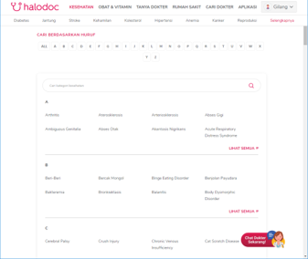
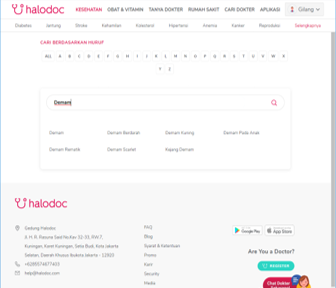
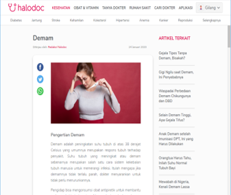
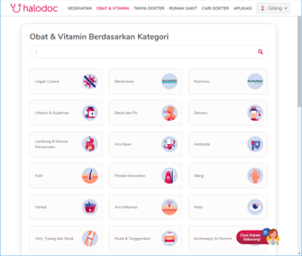
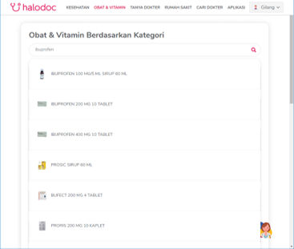
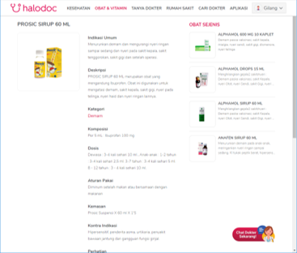

Apabila terjadi gejala penyakit seperti demam ataupun flu, ada baiknya untuk berkonsultasi dan minum obat dari dokter dan website terpercaya.
Jangan mau di PHPin sama kata nya, datang kesini biar pasti !!
1. Mencari Gejala Penyakit di Menu Kesehatan
 Menu KesehatanPengguna memilih menu Kesehatan, Selanjutnya Pengguna dapat mencari gejala penyakit yang dialami dengan mengetikkan kata kunci pada kolom pencarian.
 Mencari Kata KunciSetelah itu Pengguna dapat menekan kata kunci untuk melihat informasi lengkap mengenai gejala penyakit.
 Informasi Lengkap Mengenai Gejala Penyakit2. Memilih menu Obat & Vitamin dan Mencari Obat
 Menu Obat & VitaminPengguna memilih menu obat dan vitamin, Selanjutnya Pengguna dapat mencari obat dengan mencari kata kunci dari obat yang ingin dicari.
(Perhatian : Pastikan Obat yang Pengguna cari berdasarkan resep dari menu Kesehatan)
 Mancari ObatPengguna dapat memilih salah satu obat berdasarkan merek yang diinginkan, dan melihat informasi lengkap mengenai obat tersebut.
 Detail Obat